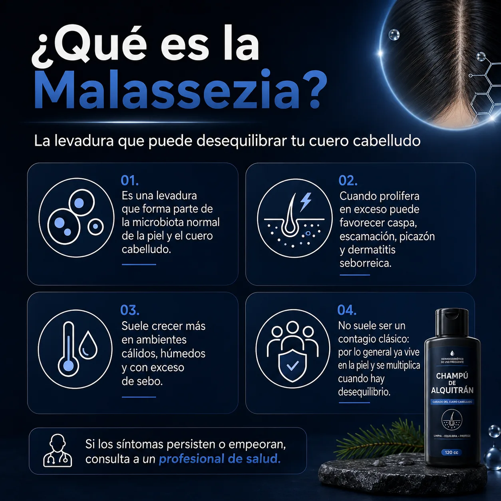
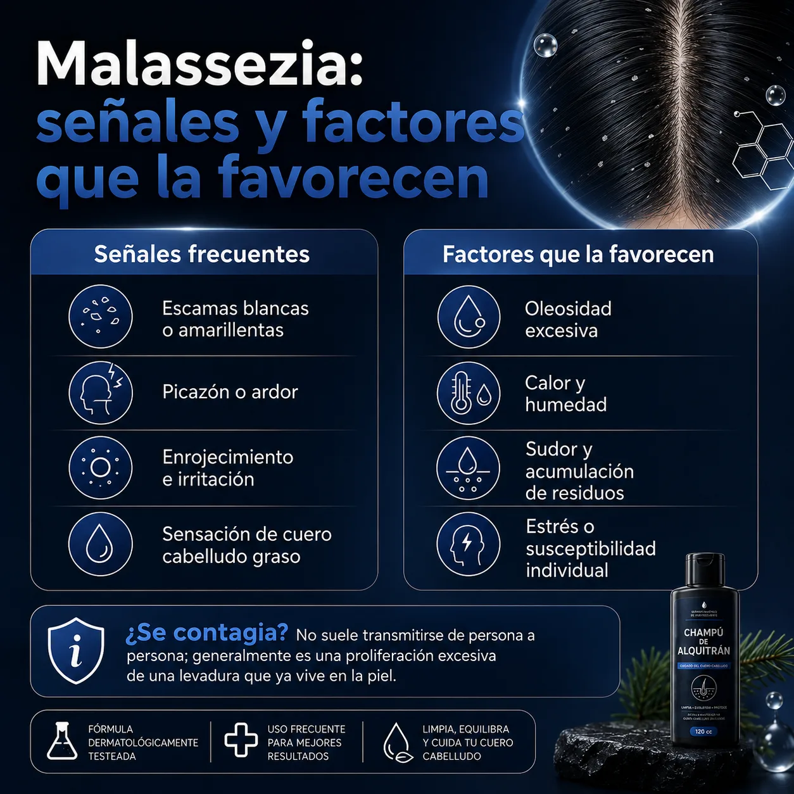
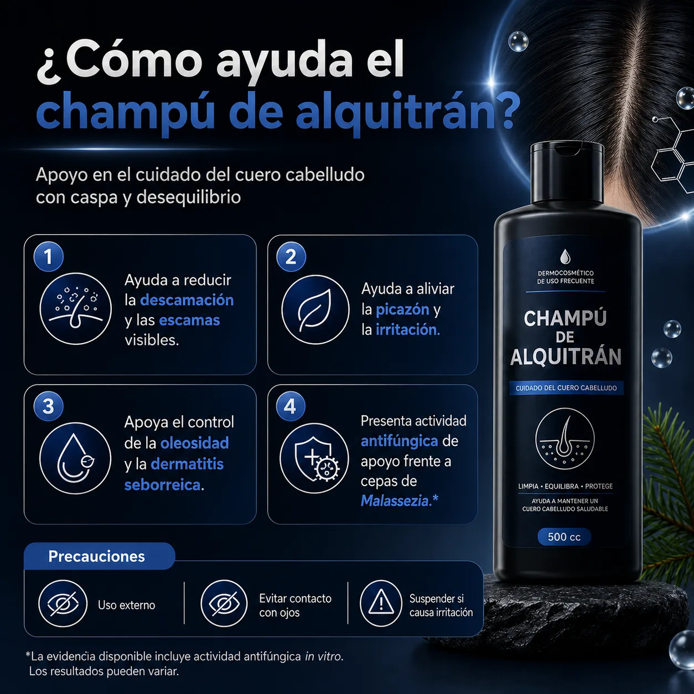
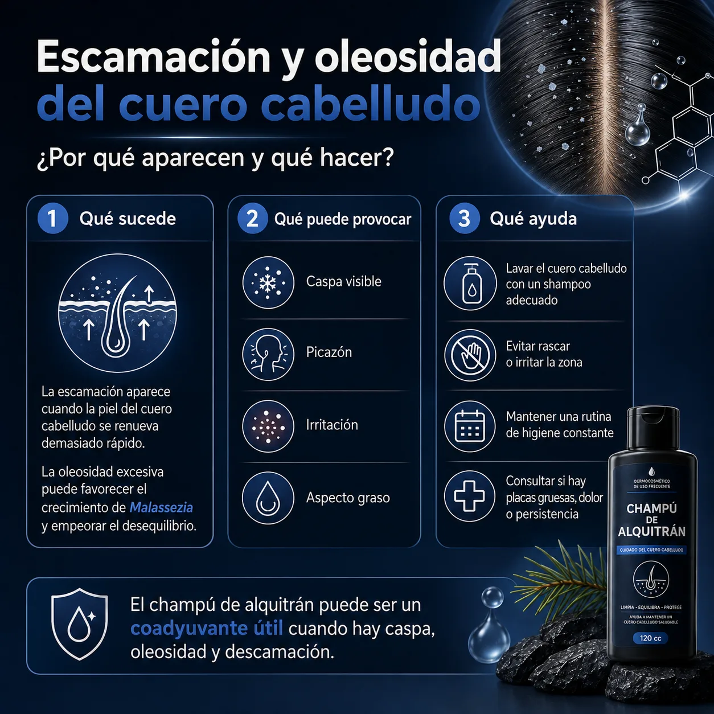

Qué es la Malassezia
Una levadura presente en la microbiota normal de la piel y el cuero cabelludo.
Información visual para entender señales, factores y cómo puede apoyar una rutina con Champú de Alquitrán.

Una levadura presente en la microbiota normal de la piel y el cuero cabelludo.

Escamas, picazón, enrojecimiento, sensación grasa y factores como calor, humedad u oleosidad.

Puede ayudar a reducir descamación, aliviar picazón e irritación y apoyar el control de oleosidad.

Mantén una higiene constante, evita rascar la zona y consulta si hay placas, dolor o persistencia.